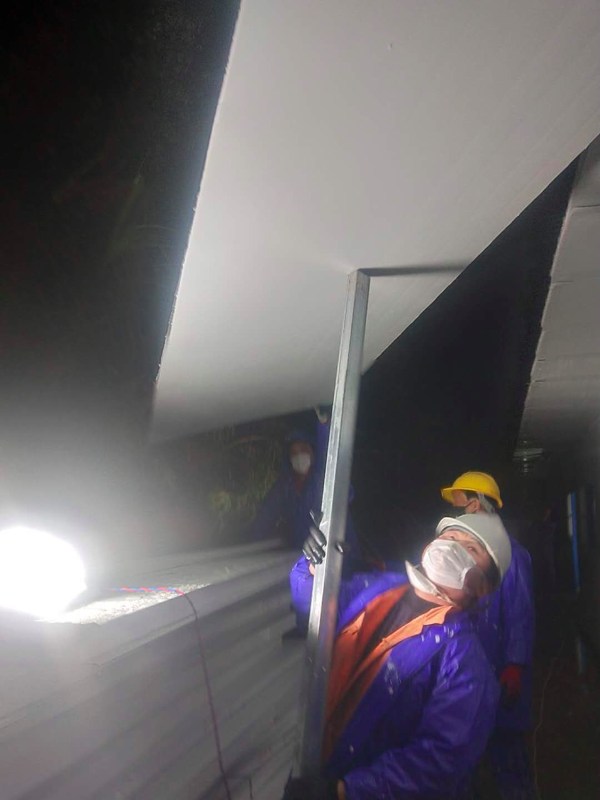
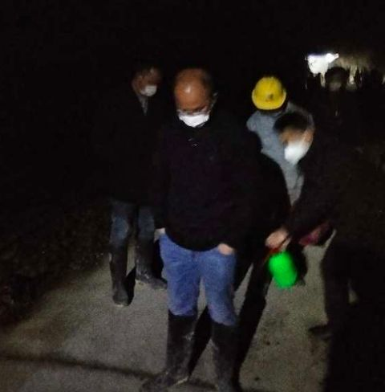
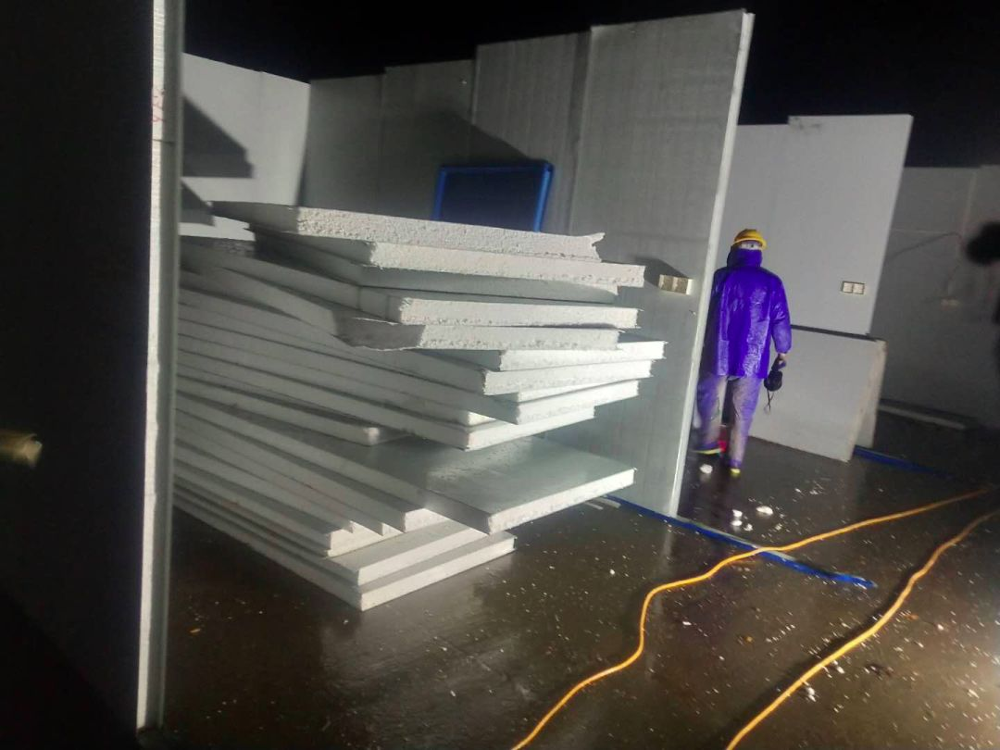
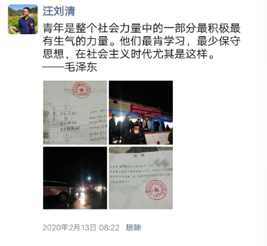

那个被感染的防疫专家出院了，他说：别怕！
原文链接 备份链接 从一开始，余昌平就想过自己可能会被感染。他是武汉大学人民医院呼吸与危重症医学科的医生，疫情发生后，他成为医院冠状病毒防治专家组的成员。 专家组成员被感染？听起来有点严重。余昌平觉得很正常：“接触那么多病人，总是会感染 …
应该做一个自私的人，还是坚持自己：做一个对社会有用的人？
口述 | 高 集
整理 | 沈 林
今天是我自愿隔离在家的第14天，按理说，我已经可以正常出门了。但是最近发生的事，让我的心情很复杂。
我叫高集，20多岁的时候交友不慎，做了一些对不起社会的错事，为此，我付出了近10年的青春。这10年里，我没有接触过外面的世界，铁窗里的滋味谈不上多么好，但多年来养成的生活习惯，特别是十八大以来服刑人员政治教育的加强，让我变得喜欢关注时事，也喜欢思考。
去年8月份，我从监狱刑满释放。因为太长时间跟社会脱节，先回了老家农村，帮家里做些农活，也熟悉熟悉这个陌生的世界。
快过年的时候，疫情发生了。
大年初二，我所在的村庄封路了，村口设置了一个劝返点。不久，我听到一个消息，隔壁镇上一户人家从武汉回来，确诊得了新冠肺炎，要命的是，此前他们家老母亲去世，办丧事聚集了很多人，传染面一下子就扩大了。
我们这个县比较小，没有专门收纳传染病人的医院，疫情发生后，县里紧急应对，打算建立一个小型的“小汤山”把确诊和疑似病例隔离起来。选址也是几经波折，一开始选了一处烂尾楼，改造一下即可启用，但当地百姓很反对；后来又选了一个酒店，也因为反对声音太大没有成。后来，县里决定就在通往疫区路边的一片宽阔地上，建一所简易的隔离区。为了赶时间，造的是工地那种简易的板房。
选址确定后，招工却遇到了困难。因为是在疫区建房，当地的老百姓需要在家隔离，外面村子的又没有人愿意去，怕被感染。偶然的机会，我看到了这个信息，我想，终于能做一些对社会有用的事了。

工地现场
我并不是多么的无私，这个病这么厉害又没有药，怎么可能不怕呢？
去之前我也思前想后考虑了很久：首先隔离点做的是简易板房，对于技术的要求不高，纯粹的体力活，我是可以帮得上忙的；第二个政府牵头来做这个项目，一定会把防护措施做到位，生命安全是有保证的；第三个，在监狱里的时候，我就在想，作为一个平凡人，我们伤害过社会，一辈子又能有几次机会，做些弥补？
我把想去工地帮忙的想法告诉了一些朋友，人多力量大嘛，不过大部分人都拒绝了我。后来，我劝说弟弟（高球）和一个初中同学（汪刘清）跟我一起去，他们是泥瓦匠，还算技术工种，应该帮得上忙。
没想到动身前，村里人却开始反对我们，原因很简单，我们去疫区建造隔离点，他们担心我们得病，殃及整个村庄，“就算那个镇病人再多，跟你也没关系，你去干嘛呀？”“你这不是多管闲事吗？”“你去了就是给村里添麻烦啊！”云云。
说实话，对于村民的想法，我是理解的，但如果你不搞，我不搞，这个隔离点建不起来，病情扩散，最后也将波及到更多人——武汉情况这么严重了，还有来自各地的兄弟舍命建造雷神山、火神山，跟他们比起来，我们这里的情况又算得上什么呢？

工作人员给我们消毒
我觉得做这件事是有觉悟的，是高尚的。我没有听从反对的声音，还是跟县里报了名，县里派了车来接，村里拦不住我们。2月11日一大早，我们到了隔离建造点，当时已经有一批人在那里开工了。

简易隔离点
到了工地上，负责人给我们做了简单的安全培训，交代了一些注意事项。那两天有点下雨，我们穿了简易的防护服就正式上岗了。
其实工地的活难度不大，无非就是搬搬东西、装点水管，打扫打扫卫生。我们过去工作36个小时后，隔离点就建造完成了。县政府给我们每个人开了一张证明，证明我们没有接触过疫区的人，这样回去以后不需要在家隔离14天。


深夜赶工
我们是2月12日的深夜回到村里的，第二天一早起来，村民们知道我们回来，反响很大：有人向村支书反映了情况；有人报了警；还有已经退休的上一任村支书，还把电话打到了县政府举报我们……
很快，现任村支书和一些村干部就赶到了我们家，告诉我们村民反映很大，意思叫我和弟弟两个人暂时搬到村子附近高速路口下面的桥洞里隔离起来；他还对我们的行为提出了批评，说我们管得太多，还给他找事情。
我把政府开给我们的免隔离证明拿给他们看，村支书态度软和了一些，他说，你有这个证明我也不好说什么，但是村里人的意见很大，你还是在家待一段时间。

村支书走了以后，我心里挺憋闷的。我想，我明明做了一件对的事情，不求大红花大奖状，但为什么会得到这样的反应呢？尤其是前任村支书打电话举报我，我太意外了，我想他一个老干部，觉悟应该是在我之上的，为什么也不支持我？
也有人开导我，说是因为我的思想已经脱离了我所处的环境，就像城里人戴一块劳力士到乡下，村里人能看出什么区别？不就跟一块上海牌手表一样的嘛。我想了又想，可能也是吧，村里人对于未知的恐惧让我和弟弟成了村子里的“不祥之人”，加上农村里菜就在地里，粮食就在米缸里，14天不出去也没什么大不了，为了村里人安心，我就自愿隔离14天好了。

工作结束后我初中同学发的朋友圈
不过那些天的闲言碎语听得我心里还是很难受，还有人说我和弟弟帮政府办事却被政府隔离了，真傻云云。
有一天，我弟弟的孩子跑出去玩，跟周围邻居的孩子玩得不亦乐乎。没想到很快就有人打电话到村里去了，村干部很快就过来处理了。事实上，我家附近的村民也被“嫌弃”了，邻居想去村子另外一边串门的时候，也总是被那边的村民赶回来。
上个礼拜，许多地方复工了。村里也陆续有人出去打工，开健康证，我和弟弟也想去领一张，但没走几步，却被村支书勒令延缓。因为这些事，我的母亲也开始责怪我，对我产生了很大的意见，觉得我拖累了家里出去打工赚钱的节奏。
从铁窗里走出来的时候，我告诉自己要改变，这改变必须体现在行动上，回报给社会。但这些天的经历，我总是忍不住在想，我到底是做对了还是做错了？应该做一个自私的人，还是坚持自己：做一个对社会有用的人？
我的隔离期结束了，但我的疑问更深了。
图片提供：高集

征集令
《新民周刊》现面向全国征集新冠肺炎采访对象和真实故事：
如果你是参与抗击新冠肺炎疫情的医护人员或其家属，我们希望聆听你的“战疫”故事，也希望传达你的诉求。
如果你是确诊、疑似患者本人或家属，我们希望了解你和家人如何“抗疫”的过程，让外界了解你的真实经历。
如果你是疫情严重地区的普通市民，我们希望展现你的乐观，并倾听你所需的帮助。
如果你是公共服务人员或各类捐助者，我们希望看到你的“最美逆行”，记录下你的无私。
……
抗击新冠肺炎疫情，我们诚征对疫情了解的社会各界人士，提供相关线索，说出你的故事，让我们用新闻留存这一切。
《新民周刊》新冠肺炎线索征集值班编辑联系方式（添加时请简要自我介绍）：
周一：应 琛 微信号：paulineying0127
周二：金 姬 微信号：gepetta
周三：黄 祺 微信号：shewen-2020
周四：周 洁 微信号：asyouasyou
周五：孔冰欣 微信号：kbx875055141
周六：吴 雪 微信号：shyshine1105
周日：姜浩峰 微信号：jianggeladandong
✳如你需要捐赠物资，可与以下两位工作人员联系:王勇：WangYong-SH 吴轶君：rommy150708（添加时请注明“捐物资”，方便工作人员快速通过您的申请，谢谢。）
新闻是历史的底稿，你们是历史的见证者。期待你的故事、你的线索！

▼
大家还都在看这些
▼
新民周刊所有平台稿件， 未经正式授权
一律不得转载、出版、改编或进行
与新民周刊版权相关的其他行为，违者必究


原文链接 备份链接 从一开始，余昌平就想过自己可能会被感染。他是武汉大学人民医院呼吸与危重症医学科的医生，疫情发生后，他成为医院冠状病毒防治专家组的成员。 专家组成员被感染？听起来有点严重。余昌平觉得很正常：“接触那么多病人，总是会感染 …
原文链接 备份链接 呼吁大家，为了我们这个历经磨难的国家，为了我们这群保家卫国的无名氏，为了在一线奋斗的各个方面的人们，再安心宅在家里一段时间吧，这样之前的付出才有意义！ 口述 | 亚 楠（化名） 整理 | 陈 冰 我和老公都是湖北仙桃 …
原文链接 备份链接 小舅婆在战“疫”前线战斗，有有做了战地后方的“小记者”。画画内容的变化也悄然诉说着疫情的变化。 编者按 当很多小朋友把寒假过得快腻味的时候，有个叫有有的小朋友，却找到了一件有趣的持之以恒的事情——画抗疫漫画。 有有，大 …
原文链接 备份链接 岛语 非常时期，武汉成了全国人民挂念、祈福的城市。封城后，武汉人民的真实生活是什么样？ 武汉在发生哪些变化？ 正和岛自1月26日起特别推出“叶青专栏”。叶青是一位定居武汉40年的市民，也是一名学者和官员。在过往多期的专 …
原文链接 备份链接 我也是个普通人，也会恐惧。但我是一名医务工作者，同时是一名党员；我们黄冈的疫情是全国城市里除武汉之外最重的几个之一，这样的困难情况下，我们不去，谁去？必须要坚持，一定要挺住。 口述 | 陈 林 整理 | 王 煜 我是湖 …